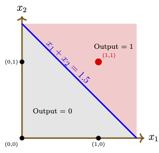
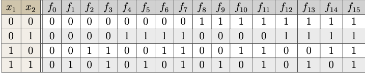
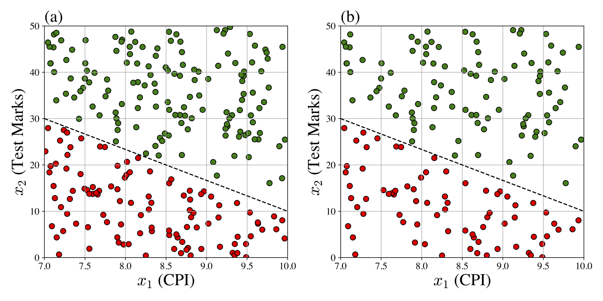
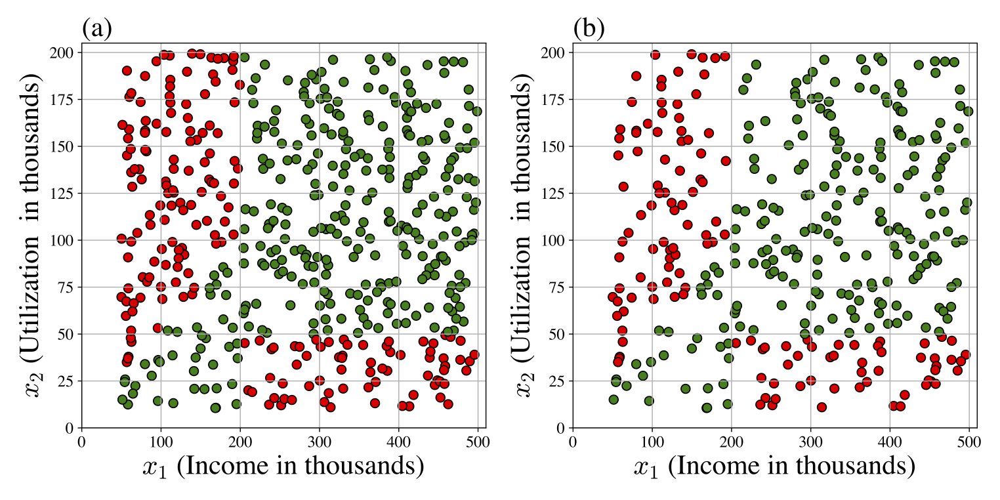
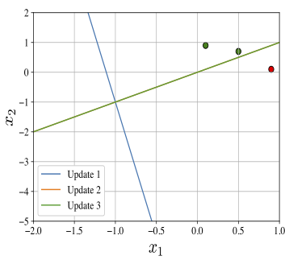
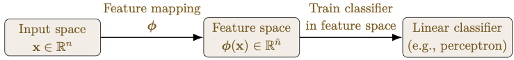
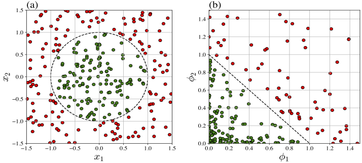

Chapter 2: Perceptrons
In the previous chapter, we introduced the concept of an artificial neuron and outlined the supervised learning algorithm. Artificial neurons (ANs) are the building blocks for artificial neural networks (ANNs). A deeper understanding of ANs is therefore essential before proceeding further.Perceptrons are the simplest and most fundamental among various types of artificial neurons. They are binary classifiers designed to classify datasets that are linearly separable, where the decision boundary is a hyperplane. In such cases, a simple learning algorithm can be devised to determine the model parameters. Moreover, convergence of the learning algorithm can be analyzed using simple mathematical arguments. This chapter is devoted to a detailed discussion on perceptrons that includes a multi-epoch perceptron learning algorithm and its convergence.
Section 2.1 introduces perceptrons and illustrates the construction of perceptrons for certain Boolean functions. This section also includes the proof of the non-existence of a perceptron for the XOR function and motivates the notion of linear separability as a necessary and sufficient condition for the existence of a perceptron for a dataset. The mathematical notion of linear separability of a dataset is then introduced in Section 2.2, where a discussion of the perceptron learning algorithm and a proof of the perceptron convergence theorem are presented. Finally, Section 2.3 discusses the concept of feature mapping as a technique to handle datasets that are not linearly separable. We illustrate how mapping the input data to a higher-dimensional feature space can render it linearly separable, thereby enabling the construction of a perceptron in that feature space.
2.1 Neuron Model
Historically, the simplest artificial neuron is the one with the activation function as the Heaviside function or the step function given bySuch an artificial neuron is called a perceptron, which we already introduced in Subsection 1.3.1. Perceptrons are oversimplified models that resemble biological neurons, where if the weighted input exceeds a threshold or bias \(b\), then the neuron gets activated.
Note that the perceptron theory we discuss here holds for both types of activation functions with some obvious modifications.
We say that a perceptron exists for a given dataset
Observe that the above convention differs from the convention adopted in Chapter 1, where the augmented input is \((1, x_1, \ldots, x_n)\) and the pre-activation (affine function) value is \(\boldsymbol{w} \cdot \boldsymbol{x} + b\). The \(+b\) convention in the previous chapter is chosen to align with modern deep learning practice. This convention is widely used in Python libraries such as PyTorch and TensorFlow and is standard throughout the deep learning literature.
2.1.1 Boolean Functions
A Boolean function of \(n\) variables is a function that takes an \(n\)-dimensional input vector \(\boldsymbol{x}\in \{0,1\}^n\) and produces a binary output digit \(y\in \{0,1\}\).Logical functions are examples of Boolean functions. Perceptrons can be used to represent some logical functions as illustrated below:
AND function given in the following truth table:| \(x_1\) | \(x_2\) | \(y=x_1 \land x_2\) |
| 0 | 0 | 0 |
| 0 | 1 | 0 |
| 1 | 0 | 0 |
It is straightforward to model a perceptron \((\overline{\boldsymbol{w}}, \mathscr{H})\) for the logical AND function. In fact, any choice of the weights \(w_1\) and \(w_2\), and the bias \(w_0=b\) such that
For instance, we can choose \(\overline{\boldsymbol{w}}=(1.5,1, 1)\). Figure 2.1 depicts the decision boundary \(x_1+x_2 = 1.5\) of the perceptron with the neuron function \(\text{𝕗}(x_1,x_2) = \mathscr{H}(x_1+x_2-1.5).\)

Figure 2.1: Input vectors and decision boundary (blue) of a perceptron for the \(\land\) operator.
OR gate function \(\lor: \{0,1\}^2\rightarrow \{0,1\}\). Considering the truth table as the dataset, provide the general form of a perceptron that models the OR function and give the corresponding neuron function. Choose a particular perceptron and draw the diagram in the \((x_1,x_2)\)-plane indicating the input data points, the decision boundary, and the regions corresponding to output values 0 and 1, for the chosen perceptron.
For \(n=2\), there are \( 2^4 = 16 \) possible Boolean functions. Each Boolean function \( f: \{0,1\}^2 \to \{0,1\} \) maps every pair \( (x_1, x_2) \) to either 0 or 1. The list of all Boolean functions is given in the following table.

Each column \( f_i \) corresponds to a Boolean function identified by the binary pattern in that column, interpreted as the output for inputs \((0,0), (0,1), (1,0), (1,1)\).
A few named Boolean functions are as follows:
- \( f_0(x_1, x_2) = 0 \) (False)
- \( f_1(x_1, x_2) = x_1 \land x_2 \) (
AND) - \( f_6(x_1, x_2) = x_1 \oplus x_2 \) (
XOR\(\rightarrow\) exclusive OR) - \( f_7(x_1, x_2) = x_1 \lor x_2 \) (
OR) - \( f_8(x_1, x_2) = \neg (x_1 \lor x_2) \) (
NOR) - \( f_9(x_1, x_2) = \neg (x_1 \oplus x_2) \) (
XNOR) - \( f_{14}(x_1, x_2) = \neg (x_1 \land x_2) \) (
NAND) - \( f_{15}(x_1, x_2) = 1 \) (True)
XOR function (denoted by \(f_6\) in the above table) outputs \(0\) at \((0,0)\) and \((1,1)\), and outputs \(1\) at \((0,1)\) and \((1,0)\). Show that there does not exist a perceptron for the XOR function by showing that the two classes
2.1.2 Illustrative Datasets
In the previous subsection, we considered two-dimensional Boolean functions where the dataset consists of only four input points with domain in \(\{0,1\}\times \{0,1\}\). In such a case, it was feasible to construct a perceptron or establish its non-existence by direct inspection. In practice, however, datasets are far larger, and such explicit construction becomes impossible. In fact, it is harder to even see whether a perceptron exists for a given data set or not. However, the existence of a perceptron can be examined by a visual observation for two- or three-dimensional datasets. In this subsection, we present two larger two-dimensional datasets, where the perceptron exists for one dataset whereas it does not exist for the other. In order to keep our examples more intuitive, we construct them from a practical view point.We begin with a practical scenario where the data are separated by a linear decision boundary.
- the CPI, denoted by \(x_1\); and
- the marks scored in the screening test, denoted by \(x_2\).
Recall that a perceptron is represented by the tuple \((\overline{\boldsymbol{w}}, \mathscr{H})\), where \(\overline{\boldsymbol{w}}=(b,w_1,w_2)\) is a weight vector to be obtained. Finding a weight vector \(\overline{\boldsymbol{w}}\) is referred to as learning (or training) a model (see Subsection 1.4.2). As per the learning algorithm, we first have to get a dataset \(\mathcal{D}_\text{train}\), called a training set, to train the model.
Assume that the placement office provided us with their dataset \(\mathcal{D}\), which is shown in Figure 2.2(a) and a training dataset \(\mathcal{D}_\text{train}\) is depicted in Figure 2.2(b). The decision boundary is shown as the black dashed line. Since the decision boundary is a straight line, we can learn a perceptron that exactly represent this dataset. However, unlike the Boolean function examples above, the dataset is too large to determine the weights by hand; a systematic learning algorithm is therefore essential.

Figure 2.2: (a) The full dataset \(\mathcal{D}\); (b) the training dataset \(\mathcal{D}_\text{train}\) for Example 2.2. Green dots indicate students who were successfully placed, while red dots represent those who were not placed. There are 250 examples in \(\mathcal{D}\) and 70% of examples are taken randomly into \(\mathcal{D}_\text{train}\).
PlacementPredictorDatasetGenerator
Our next example illustrates a practical scenario where the dataset is not linearly separable.
For simplicity, let us assume that the approval decision depends only on two parameters, namely,
- the customer's monthly income, denoted by \(x_1\); and
- the customer's expected monthly expenditure through the credit card, denoted by \(x_2\).
XOR dataset.

Figure 2.3: (a) The full dataset \(\mathcal{D}\subset [50, 500] \times [10, 200]\); (b) the training dataset \(\mathcal{D}_\text{train}\) for Example 2.3. Green dots represent approved applications and red dots indicate declined applications. There are 500 examples in \(\mathcal{D}\) and 70% of examples are taken randomly into \(\mathcal{D}_\text{train}\).
Design your own decision boundary (that roughly resembles the observed boundary in the figure) by interpreting the following approval policy rules:
- Customers with high income and high credit card utilization are more likely to be approved.
- Customers with low income and low credit card utilization are also more likely to be approved.
2.2 Separability and Algorithm
In the previous section, we first constructed perceptrons for certain Boolean functions. Since the dataset for such a two-dimensional Boolean function is small (contains only four entries), it was feasible to determine the weights by direct inspection. We then illustrated that in practical situations, the dataset may be so large that an explicit construction of a perceptron (even if it exists) is impossible. Therefore, it is desirable to have an efficient algorithm to compute the weights automatically. This can be achieved by first considering an appropriate cost function and then computing the weights that minimize the cost function, which is referred to as learning a model. We discuss different ways of defining cost functions and some optimization methods in a later chapter. In this section, we introduce a simple learning algorithm to train a perceptron based on incremental updates.2.2.1 Linear Separability
First, let us define the mathematical notion of a linearly separable dataset.We call such a vector \(\overline{\boldsymbol{w}}\) an augmented weight vector.
We have to find two linearly separable sets \( \mathcal{C}^-\subset \mathbb{R}^{n}\) and \(\mathcal{C}^+\subset \mathbb{R}^{n} \) such that
Since the activation function of a perceptron is the Heaviside function, we see that the output \(y\in \{0,1\}\). Therefore, we have
We now claim that \(\mathcal{C}^-\) and \(\mathcal{C}^+\) are linearly separable.
By the definition of perceptron, we have
Thus, by Definition 2.1 (with \(w_0=b\)), we see that \(\mathcal{C}^-\) and \(\mathcal{C}^+\) are linearly separable.
Conversely, assume that there exist two linearly separable subsets \( \mathcal{C}^-\) and \(\mathcal{C}^+ \) of \(\mathbb{R}^n\) such that \(\mathcal{D} = \big(\mathcal{C}^- \times \{0\}\big) \cup \big(\mathcal{C}^+ \times \{1\} \big)\). Then, by Definition 2.1, there exists a vector \(\overline{\boldsymbol{w}}=(w_0, w_1, \ldots, w_n) \in \mathbb{R}^{n+1}\) such that the conditions (2.4) hold with \(w_0=b\). This shows that \((\overline{\boldsymbol{w}}, \mathscr{H})\) is a perceptron.
We call a dataset linearly separable if there exists a partition of the input set \(\mathcal{C}\) consisting of two linearly separable sets.
Equivalently, by virtue of Definition 2.1, we say that a dataset is linearly separable if there exists an augmented weight vector \(\overline{\boldsymbol{w}}\) that classifies all examples of the dataset correctly.
We want a perceptron that takes such a 4-bit binary vector as input and outputs \(1\) if the corresponding integer is odd and \(0\) if it is even.
Does there exist a perceptron that can perform this odd/even classification? Justify your answer. If your answer is NO, give a mathematical justification. If your answer is YES, first give a mathematical justification and then construct a perceptron that performs the classification correctly (without running the perceptron algorithm).
2.2.2 Training Algorithm
Given a linearly separable dataset, our next task is to design an algorithm that learns a perceptron by computing a separating hyperplane. We begin by describing an algorithm for a single epoch in the training process using a given training dataset \(\mathcal{D}_\text{train}\).
- the training dataset \(\mathcal{D}_\text{train}=\{(\boldsymbol{x}_k,y_k)~|~ k=1,2,\ldots, N_\text{train}\}\);
- the initial augmented weight vector \(\overline{\boldsymbol{w}}_0=(b_0, w_{0,1}, \ldots, w_{0,n})\in \mathbb{R}^{n+1}\); and
- the learning rate \(\eta \in (0,\infty)\).
Output: \(\overline{\boldsymbol{w}}^{(1)} := \overline{\boldsymbol{w}}_{N_\text{train}}\).
| \(x_1\) | \(x_2\) | \(y\) |
| 0.9 | 0.1 | 0 |
| 0.1 | 0.9 | 1 |
| 0.5 | 0.7 | 1 |
Let us take \(\overline{\boldsymbol{w}}_0 = (0, 0, 0)\) and \(\eta = 1\).
Since our training dataset contains three examples (\(N_{\text{train}}=3\)), we have to perform three updates to obtain the augmented weight vector \(\overline{\boldsymbol{w}}^{(1)}\) in one epoch.
The updates in a single epoch using Algorithm 2.1 are the following:
Update 1: \(\overline{\boldsymbol{w}}_1 = (1,-0.9,-0.1).\)
Update 2: \(\overline{\boldsymbol{w}}_2 = (0, -0.8, 0.8).\)
Update 3: \(\overline{\boldsymbol{w}}_3 = (0, -0.8, 0.8).\)
Therefore, the augmented weight vector after the single epoch is given by

Figure 2.4: Decision lines for the updates in Example 2.4.
| \(x_1\) | \(x_2\) | \(y\) |
| 0.9 | 0.1 | 0 |
| 0.1 | 0.9 | 1 |
| 0.5 | 0.45 | 1 |
Test the perceptron model \((\overline{\boldsymbol{w}}^{(1)},\mathscr{H})\) on the training set by directly applying the model to each example of the dataset. Give the conclusion about whether the trained perceptron represents the training dataset exactly or not.
Modify the above Python code to include a visual representation (graph) of the given dataset along with the graph of the separating lines at each update.
Consider performing Algorithm 2.1 on a two-dimensional dataset (that is, \(\boldsymbol{x}\in \mathbb{R}^2\)). Suppose that during the \(k^{\rm th}\) update, \(\Delta_k \ne 0\), and the decision boundaries at \((k-1)^{\rm st}\) and \(k^{\rm th}\) updates intersect at a unique point. We call this point of intersection as the pivot point of the \(k^{\rm th}\) update and denote it by \(\boldsymbol{x}_{k}^*\) .
Show that \(\boldsymbol{x}_{k}^*\) satisfies
Often, a single epoch is not always sufficient to obtain a perceptron that represents the given linearly separable training dataset exactly.
| \(x_1\) | \(x_2\) | \(y\) |
| 8.0 | 20 | 0 |
| 7.5 | 40 | 1 |
| 7.0 | 29 | 0 |
| 9.25 | 26 | 1 |
With \(\eta=0.9\), perform one epoch using Algorithm 2.1 for each of the following initial weight vectors, and determine in each case whether the resulting perceptron model \((\overline{\boldsymbol{w}}^{(1)},\mathscr{H})\) correctly represents the training data:
- \(\overline{\boldsymbol{w}}_0 = (59.1,\; 11.2,\; 19)\).
- \(\overline{\boldsymbol{w}}_0 = \tfrac{1}{60}(57,\; 4,\; 1)\).
The following algorithm trains a perceptron using multiple epochs:
- the training dataset \(\mathcal{D}_\text{train}=\{(\boldsymbol{x}_k,y_k)~|~ k=1,2,\ldots, N_\text{train}\}\);
- the initial augmented weight vector \(\overline{\boldsymbol{w}}_0=(b_0, w_{0,1}, \ldots, w_{0,n})\in \mathbb{R}^{n+1}\); and
- the learning rate \(\eta \in (0,\infty)\).
- Set \(\overline{\boldsymbol{w}}^{(0)} = \overline{\boldsymbol{w}}_0.\)
- Define the augmented input vector \(\overline{\boldsymbol{x}}_k = (-1, \boldsymbol{x}_k)\), for all \(k=1,2,\ldots, N_\text{train}\).
- For each \(j=1,2,\ldots\), perform the following single epoch:
- Update: For each \(k=1,2,\ldots, N_\text{train}\), perform the following update rule:
- Step 1: Compute \(\Delta_k = y_k - \mathscr{H}(\overline{\boldsymbol{w}}_{k-1} \cdot \overline{\boldsymbol{x}}_k).\)
- Step 2: If \(| \Delta_k| < 0.5\), then take \(\overline{\boldsymbol{w}}_k = \overline{\boldsymbol{w}}_{k-1}.\)
- Step 3: Otherwise, use the perceptron update rule:
\[ \overline{\boldsymbol{w}}_k = \overline{\boldsymbol{w}}_{k-1} + \eta\Delta_k\, \overline{\boldsymbol{x}}_k. \]
- Assign: Set \(\overline{\boldsymbol{w}}^{(j)} := \overline{\boldsymbol{w}}_{N_\text{train}}\).
- Check: For \(j\ge 1\), check the following condition:
\begin{eqnarray} \|\overline{\boldsymbol{w}}^{(j)} - \overline{\boldsymbol{w}}^{(j-1)}\|_2 = 0. \end{eqnarray}(2.5)
If this condition is not satisfied, then take \(\overline{\boldsymbol{w}}_0 = \overline{\boldsymbol{w}}_{N_\text{train}}\) and go for the next epoch.
Else if this condition is satisfied, then stop the computation.
- Update: For each \(k=1,2,\ldots, N_\text{train}\), perform the following update rule:
The perceptron trained through the above multi-epoch algorithm is denoted by \((\overline{\boldsymbol{w}}^{(n_e)}, \mathscr{H})\), where \(n_e\) denotes the number of epochs taken by the algorithm to converge.
Take \(\overline{\boldsymbol{w}}=\boldsymbol{0}\), the zero vector, and \(\eta=0.9\). Find the number of epochs needed for the convergence of the weight vector sequence. Let the weight vector limit be \(\overline{\boldsymbol{w}}^{*}\). Using the perceptron model \((\overline{\boldsymbol{w}}^{*}, \mathscr{H})\), compute the mean squared error on the test dataset.
Suppose that there exists an integer \(J\ge 0\) such that the perceptron \((\overline{\boldsymbol{w}}^{(J)}, \mathscr{H})\) correctly classifies all the examples of the training dataset \(\mathcal{D}_\text{train}\). Then, show that the algorithm converges in \(n_e = J\) epochs.
Show that the converse does not hold by constructing a training dataset \(\mathcal{D}_\text{train}\) and initial conditions \(\overline{\boldsymbol{w}}^{(0)}\), \(\eta>0\) such that Algorithm 2.2 converges but the limiting perceptron does not correctly classify all examples in \(\mathcal{D}_\text{train}\).
The above problem raises the challenge of finding sufficient conditions under which the algorithm converges to a correct classifier of the dataset. There are also other important questions to be answered, namely,
- Will the algorithm terminate in finite epochs?
- If so, can we estimate the maximum number of epochs needed to guarantee convergence?
2.2.3 Perceptron Convergence Theorem
The following theorem provides a sufficient condition for the convergence of Algorithm 2.2 in finite epochs.Let the training dataset \(\mathcal{D}_\text{train}=\{(\boldsymbol{x}_k,y_k)~|~ k=1,2,\ldots, N_\text{train}\}\) be linearly separable, and let \(\overline{\boldsymbol{w}}^*\) be an augmented weight vector such that the perceptron \((\overline{\boldsymbol{w}}^*, \mathscr{H})\) classifies all examples of \(\mathcal{D}_\text{train}\) correctly with \(\overline{\boldsymbol{w}}^*\cdot \overline{\boldsymbol{x}}_k \ne 0\), for all \(k=1,2,\ldots, N_\text{train}\). Then, for any initial augmented weight vector \(\overline{\boldsymbol{w}}_0\) and any learning rate \(\eta > 0\), there exists an integer \(n_e\ge 0\) such that the perceptron \((\overline{\boldsymbol{w}}^{(n_e)}, \mathscr{H})\) classifies all examples in \(\mathcal{D}_\text{train}\) correctly, where \(\overline{\boldsymbol{w}}^{(n_e)}\) is computed using Algorithm 2.2.
Assume that the multi-epoch perceptron Algorithm 2.2 had performed \(n_e>0\) number of epochs and not all examples are correctly classified by the vector \(\overline{\boldsymbol{w}}^{(n_e) }\). Further, assume that \(\overline{\boldsymbol{w}}^{(n_e) }\) is obtained after \(m-1\) updates.
Let \(k_1\in \{1,2,\ldots, N_\text{train}\}\) be the smallest integer such that the example (\(\boldsymbol{x}_{k_1}, y_{k_1}\)) is not classified correctly by \(\overline{\boldsymbol{w}}^{(n_e) }\). Then, the algorithm performs the \(m^\text{th}\) update and obtains \(\overline{\boldsymbol{w}}_{m}\) which satisfies (how?)
On the other hand, since \(\overline{\boldsymbol{x}}_{k_1}\) is not classified by \(\overline{\boldsymbol{w}}_{m-1}\) correctly, we can show that (how?)
where \(r := \max\{\|\overline{\boldsymbol{x}}_{k}\|~|~k=1,2,\ldots, N_\text{train}\}\). The inequalities (2.6) and (2.7) lead to a contradiction (how?) to our assumption that the algorithm performs epochs indefinitely. Thus, the algorithm has to terminate in a finite number of epochs.
Further, by equating the lower and the upper bounds of \(\|\overline{\boldsymbol{w}}_{m}\|^2 \), we can obtain the maximum number of updates, denoted by \(m^*>0\) (justify the existence of a positive \(m^*\)). If there is an example \(\overline{\boldsymbol{x}}_k\) that has still not been classified correctly by \(\overline{\boldsymbol{w}}_{m^*}\), then the algorithm will proceed to the next update \(\overline{\boldsymbol{w}}_{m^*+1}\), which must satisfy the conditions (2.6) and (2.7). But, both these conditions do not hold simultaneously for \(m=m^*+1\) (why?). Therefore, the perceptron \((\overline{\boldsymbol{w}}_{m^*},\mathscr{H})\) has to classify all the examples correctly.
Let \(m^*\) be the maximum number of updates performed by Algorithm 2.2 to obtain a perceptron that classifies all the examples of the dataset correctly. If \(\overline{\boldsymbol{w}}_0=\boldsymbol{0}\), then show that there exist real numbers \(r>0\) and \(\rho>0\) such that
2.3 Beyond Linear Separability
In the previous section, we discussed a simple multi-epoch algorithm to train a perceptron to classify a linearly separable dataset. However, in real-world applications, we often encounter datasets that are not linearly separable.There are two main scenarios where linear separability does not hold in a dataset:
- When the decision boundary cannot be represented by a hyperplane (for example, circular or any curved decision boundaries). In such cases, the dataset is said to be nonlinearly separable and the decision boundary is called the nonlinear discriminant.
- When the classification task requires multiple hyperplanes (or curved surfaces) to separate the classes. This occurs in problems with complex class structures (such as the XOR example discussed in Problem 2.2 and the dataset generated in Example 2.3) or multi-class classification problems.
The underlying idea of feature engineering is to transform the input data into another space, called the feature space, where the dataset becomes linearly separable. In this section, we discuss the feature space transformation with a few illustrations.
2.3.1 Feature Space Mapping
Even if a dataset is not linearly separable in the input space, it may be possible to transform the input vectors \(\boldsymbol{x} \in \mathbb{R}^n\) into new representations \(\boldsymbol{\phi}(\boldsymbol{x}) \in \mathbb{R}^{\hat{n}}\), such that the equivalent transformed dataset becomes linearly separable. The perceptron training Algorithm 2.2 can then be applied directly in the feature space to learn a linear classifier for the transformed data (see Figure 2.5).
Figure 2.5: Schematic view of mapping input data to a feature space where a linear classifier can be applied.
We write \(\boldsymbol{\phi}(\boldsymbol{x}) = (\phi_1(\boldsymbol{x}), \phi_2(\boldsymbol{x}), \ldots, \phi_{\hat{n}}(\boldsymbol{x}))\), where each component \(\phi_k:\mathbb{R}^n\rightarrow \mathbb{R}\), for \(k=1,2,\ldots, \hat{n}\), is called a basis function.
Consider the augmented feature function \(\overline{\boldsymbol{\phi}}(\boldsymbol{x}) = (-1, \phi_1(\boldsymbol{x}), \phi_2(\boldsymbol{x}), \ldots, \phi_{\hat{n}}(\boldsymbol{x}))\) and define the generalized linear discriminant as
If such a feature map is constructed, then a neuron (such as a perceptron) can be trained on this transformed dataset using a linear classifying algorithm (such as Algorithm 2.2).
To have a better understanding of the feature space transformation, we illustrate the construction of feature maps for a given dataset provided the discriminant function is known explicitly.
In particular, consider the training dataset \(\mathcal{D}_{\text{train}} = \{(\boldsymbol{x}_k, y_k)\} \subset \mathbb{R}^2\times \{0,1\}\) depicted in Figure 2.6(a). Here, we have taken \(r=1\) and the decision boundary is the unit circle. Obviously, Algorithm 2.2 cannot be used to train a perceptron that represents this dataset correctly.
However, by mapping the training dataset into a suitably chosen feature space, we can train a perceptron. For instance, choose \(\boldsymbol{\phi}(x_1,x_2) = (x_1^2, x_2^2)\), where the basis functions are \(\phi_k(x_1,x_2) = x_k^2\), \(k=1,2\). Then, we can see that the generalized linear discriminant is

Figure 2.6: An illustration of a nonlinearly separable dataset mapped to a linearly separable dataset with feature map discussed in Example 2.5. Here, red dots represent labels with value \(0\) and green dots correspond to labels with value +1. Black dashed line represents the decision boundaries in the respective spaces. (a) Dataset in the input space (b) Dataset in the feature space.
\(~\)Partial Answer: \(\hat{d} = 5\)
XOR function in the input space. However, by suitably choosing a feature map, we can train a perceptron for XOR in the feature space.
XOR function \( f_6(x_1, x_2) = x_1 \oplus x_2 \) is represented exactly by a perceptron in the feature space.
NXOR function, when mapped to the feature space, is linearly separable.